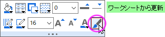
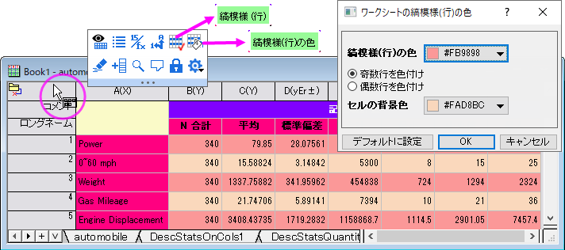
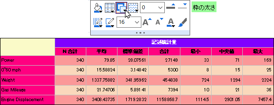
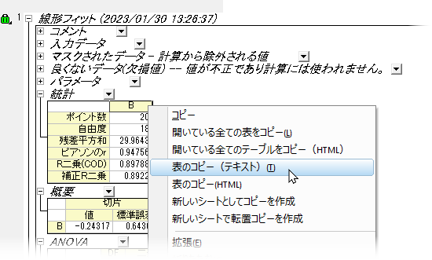
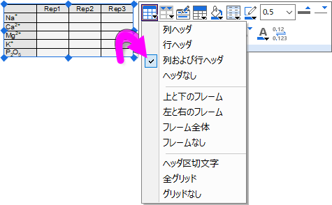

FAQ-136 グラフに表を追加したり、カスタマイズするにはどうしたら良いでしょうか?
Add-Table-to-Graph
最終更新日：2022/12/9
いくつかの方法があります。
ワークシートを挿入
このオプションは、2023以降のバージョンでは最適な方法です（以前のバージョンでもある程度機能していましたが、2023で改良されています。概要については、このOriginLabブログを参照してください)。
- グラフまたはレイアウトを挿入したいワークシートをアクティブにします。データを含むすべての行が挿入されるため、挿入したいデータをワークシートに追加しますが、それ以外のデータがない状態にします。
- ワークシートをグラフまたはレイアウトに挿入する前または後に、シートのスタイル設定ができます。挿入されたワークシートは元のワークシートにリンクされているため、(a) 選択してから (b) ミニツールバーのワークシートから更新ボタンをクリックすることで、元のシートの変更を挿入したシートに渡すことができます。
- 
- 元のワークシート に適用できるスタイルオプションとして、縞模様の行があります。縞模様の行ボタンはワークシートレベルのミニツールバーにあります（ヒント：左上のセルまたはワークシート右端の灰色の領域のウィンドウタイトルバーの近くでマウスカーソルを合わせてクリック）。
- 
- グラフまたはレイアウトにワークシートを挿入するには、ワークシートを挿入（プロット操作・オブジェクト作成ツールバー）をクリックします。メインメニューからは、挿入：ワークシートを選択します。これによりシートブラウザが開きます。直近でアクティブなシートが右パネルで太字で表示されます。このパネルでシートを選択してOKをクリックします。
- 挿入されたシートの選択ハンドルをドラッグしてサイズ変更できます。
- 挿入されたシートを選択して開くミニツールバーでグリッド線の追加/変更、枠の追加、フォントサイズ変更などが可能です。
- 
ワークシートデータを挿入
- ワークシートセルを選択して右クリックしコピーします。
- グラフを開き、右クリックして貼り付けまたは、リンクの貼り付け、リンクの転置貼り付けを選びます（表および転置データへの動的リンク）
- データの範囲のコピーと貼り付けは列ラベル行情報の同時コピーはできません。コピーしたい場合、表をダブルクリックして内部表を開きます。表の列ラベル行を表示して、ワークシートから表にメタデータのリンクをコピー/貼り付けします。そして表の更新ボタンをクリックします。

空の表を挿入して手動でデータを追加、またはワークシートデータのリンクをコピー/貼り付け
- メニューの挿入：表 を選択します。または、グラフ操作ツールバーの新規リンク表ボタン をクリックします。
- 表示されるダイアログで列数と行数を指定します。OKをクリックします。
- データを追加するには、表オブジェクト上でダブルクリックします。これにより入力値の表ワークシートを開き、表が更新されます。入力された値は、フィット結果を含むセルや別の分析レポートテーブルにリンクすることができます。
分析レポートシート表に挿入
- 分析レポートシートを開き、任意のレポート表ヘッダ（ノート、統計、パラメータなど）を右クリックしてコンテキストメニューから表のコピー(テキスト)を選択します。
- グラフを開き、右クリックして貼り付けまたは、リンクの貼り付け、リンクの転置貼り付けを選びます（表および転置データへの動的リンク）。
- 
Note:レポート表のデータの範囲を指定して貼り付けることもできますが、範囲を限定するとヘッダ情報はコピーされません。
グラフ内の表を挿入も参照してください。
分析結果のレポート表を追加

Originの分析ツールのほとんどは、レポート表を分析結果のプロットに追加することをサポートしています (例: 線形フィットツールの出力タブ)。レポート表を追加する場合、表中の値ダイアログを開き、表示させる値を追加、削除、再配置することで、表の内容を変更できます。次のセクションの手順に従って表のスタイルを設定します。
表のスタイリング
- 
- もしくは、表をダブルクリックして、ポップアップウィンドウで表を開きます。ポップアップ中で、スタイルツールバーと書式ツールバーを使用して表のスタイルを設定します (ポップアップウィンドウで強調表示されている内容に応じて、一部のミニツールバーボタンも使用できます)。さらに、ショートカットメニューを使用すると、セルのフォーマット、データの書式を設定、およびその他の便利な機能にアクセスできます。ポップアップ内で変更を行ったら、表の更新ボタンをクリックして変更を適用し、グラフまたはレイアウトウィンドウに戻ってください。
キーワード: 分析, 結果, 発行, グリッド, リンク, パラメータ, メタデータ